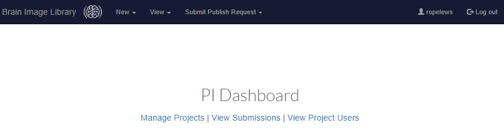
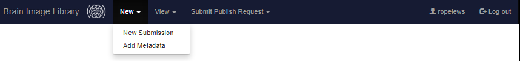
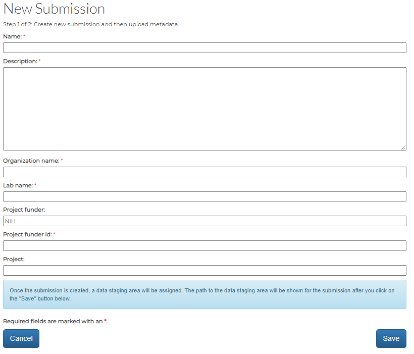
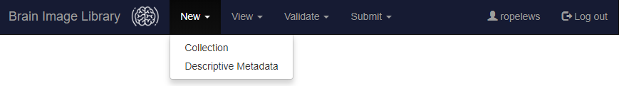
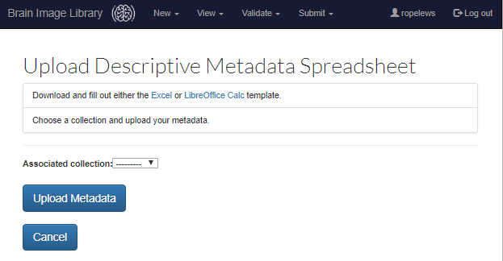

Data Submission
Overview
A data contributor portal has been created to enable laboratories to submit data to the Brain Image Library. The key processes to submit data are:- Set up your submission account: Setting up your submission account only needs to be done once.
- Create an XSEDE portal account: An XSEDE portal account is required to submit data.
- Request access to the data submission portal: You will receive an email message once access has been enabled. Please allow 24 hours for access to be granted.
- Set your initial password:
- Enter the data submission portal: Using your username and password, log into the data submission portal.
- Create a submission collection: A submission collection is a wrapper associating image data with metadata.
- Upload image data: Because this is the time-limiting step, we suggest this step be started before uploading metadata for the submission collection.
- Upload metadata: Submission collection metadata can be uploaded through the portal in spreadsheet format.
- Validate data: Validate the data and correct any errors discovered.
- Review and Submit data: Please correct all errors and check all warnings in the validation log prior to submission.

Definitions
The following terms in this document have specific context, as defined below:
- Dataset
- In the BIL context, a dataset is a stand-alone entry (e.g. an image-volume) with unique metadata. A dataset typically contains many 2d image files that are assembled to form a more complex two or three dimensional volume. A each "level" of data is considered a separate dataset. (e.g. The set of raw data and the same data aligned to a reference are considered two separate datasets.)
- Submission
- A submission is an ingestion wrapper that contains one or more related datasets and associated metadata. Submissions will inherit project metadata (such as the NIH project that the data is associated with), thus all datasets within a submission must belong to the same project. A submission can contain a single or multiple datasets. In general, smaller submissions are recommended because all datasets within a submission must pass the validation process for the datasets within the submission to be published.
- Project
- A way of grouping data to ensure that (1) people working with the data get gain appropriate access and credit for their contributions and (2) Data is linked to the proper funding sources. Datasets within a submission will inherit project metadata
- Publish
- The act of making a submission that has passed all validation checks publicly available. Data is not fully "submitted" to BIL, until it is published
Submission Steps
If you have problems with the steps below, do not hesitate to contact the BIL Helpdesk for assistance.
- Set up your submission account
- Create an XSEDE portal Account
Follow these instructions to create an XSEDE portal Account.
- Request access to the data submission portal
Send email to bil-support@psc.edu along with your XSEDE Portal Account. You will receive an email message once access has been enabled. Please allow 24 hours for access to be granted.
- Set your initial password:
Follow these instructions to set your initial password.
- Create an XSEDE portal Account
- Enter the data submission portal
To enter the data submission portal, visit
submit.brainimagelibrary.org.
Enter your PSC username and password on this page. If you are having problems
logging in, please contact the BIL Helpdesk.

- Define your projects (PIs and Data Managers Only)
Users that do not have PI/Data manager permissions will not have access to the functions described in this step. If you need access to these functions,
have the PI send email to the BIL helpdesk with your BIL userid and name and request that you be granted this portal permission.The PI dashboard allows PIs and Data managers to define and manage projects that will be submitting datasets to BIL. This dashboard will allow the PI to add authorized users to the project and see the status of in-progress, unsuccessful, and successful submissions associated with the project, regardless of the users that uploaded and submitted the data.
To enter (or edit) project information, Select the Manage Projects option. From this menu you can create a new project and view both the personnel and submissions associated with each project.
To define a project select the Create a New Project button. Enter the Project Name and the grant number associated with the project in the Funded By: field. If the project is a BICCN project, please be sure to tag the project appropriately and make sure that the Project Name field contains the project name assigned by BCDC.
To add a user to the project (such as a data submitter) select the View Personnel link and add the user.
- Create a submission
There MUST be a project defined to create a BIL submission
The next step in the submission process is to create a BIL submission. A submission is an ingestion wrapper that contains one or more related datasets and associated metadata. Submissions will inherit project metadata (such as the NIH project that the data is associated with), thus all datasets within a submission must belong to the same project.
A submission can contain a single or multiple datasets. In general, smaller submissions are recommended because all datasets within a submission must pass the validation process for the datasets within the submission to be published.
When created, each BIL submission will have a a unique 16-digit identifier associated with it (e.g. 6247417d691a4548) and a unique dropbox-like landing zone directory (e.g. /bil/lz/user/6247417d691a4548. This landing zone directory is where the datasets belonging to the submission must be transferred to for validation and ingestion processing.
To create a submission, select the Submission sub-option of the New menu.

Next, enter the required metadata associated with the submission collection (see image below).

select the Save button.
Next, - Upload Descriptive Metadata
- Upload image data
The ingestion process currently supports native TIFF and JPEG 2000 image file formats and will soon support formats that are convertible to the OME-TIFF format via the bioformats tool. For more information on the bioformats tool see:
https://docs.openmicroscopy.org/bio-formats/5.7.3/formats/index.html.As mentioned above in the prior step, the submission portal creates an upload landing zone space for image data. To find this landing zone, select the Collections sub-option of the View menu.

The landing zone is listed under the Data Path column:

To tie metadata to an image dataset, each image dataset must be uploaded in a separate subdirectory. For example, if you had an experiment containing 5 mouse datasets that you wanted to to include as a single submission collection, you would create 5 subdirectories in the landing zone for the submission collection, one for each mouse dataset. e.g:
/bil/lz/testuser/abcdef0123456789/mouse1
/bil/lz/testuser/abcdef0123456789/mouse2
/bil/lz/testuser/abcdef0123456789/mouse3
/bil/lz/testuser/abcdef0123456789/mouse4
/bil/lz/testuser/abcdef0123456789/mouse5
There are many supported ways to upload files into the landing zone directory through the BIL data transfer nodes including rsync, Globus, sftp, and scp.Due to size, image data can not be uploaded through the submission portal (submit.brainimagelibrary.org). It must be uploaded separately through the BIL data transfer nodes, which are available at the virtual host: upload.brainimagelibrary.org. All users authorized to use the data submission portal (submit.brainimagelibrary.org) are also authorized to use the data transfer nodes (upload.brainimagelibrary.org). The username and passwords are the same on both systems.
- Using rsync to upload.brainimagelibrary.org: An example uploading
all data in the directory
(mouse1) as user testuser through the data transfer node
upload.brainimagelibrary.org to the submission collection landing zone
(abcdef0123456789)is shown below:
$ rsync -lrtpDvP mouse1 testuser@upload.brainimagelibrary.org:/bil/lz/testuser/abcdef0123456789 sending incremental file list mouse1/ mouse1/data1.tiff 1356122 100% 126.20MB/s 0:00:00 (xfer#1, to-check=0/2) sent 1356392 bytes received 35 bytes 2712854.00 bytes/sec total size is 1356122 speedup is 1.00 - Using sftp to upload.brainimagelibrary.org: An example logging into
the data transfer node as testuser is shown below. The first cd
command is used to move to the BIL landing zone for the submission collection.
The mkdir command is used to create a sub-directory (called mouse1
in the landing zone, while the second cd command is used to move to this
subdirectory. Finally, the put command is used to upload data - in
this case, a single file (data1.tiff):
$ sftp testuser@upload.brainimagelibrary.org The authenticity of host 'upload.brainimagelibrary.org (128.182.108.164)' can't be established. ECDSA key fingerprint is 32:cf:46:44:3d:9c:8e:b2:1d:14:03:66:45:0b:11:29. Are you sure you want to continue connecting (yes/no)? yes Warning: Permanently added 'upload.brainimagelibrary.org,128.182.108.164' (ECDSA) to the list of known hosts. testuser@upload.brainimagelibrary.org's password: Connected to upload.brainimagelibrary.org. sftp> cd /bil/lz/testuser/abcdef0123456789 sftp> mkdir /bil/lz/testuser/abcdef0123456789/mouse1 sftp> cd /bil/lz/testuser/abcdef0123456789/mouse1 sftp> put data1.tiff Uploading data1.tiff to /bil/lz/testuser/abcdef0123456789/mouse1/data1.tiff data1.tiff 0% 0 0.0KB/s --:-- ETA data1.tiff 100% 1324KB 1.3MB/s 00:00 sftp> exitDue to their ability to resume interupted transfers, the use of rsync and Globus is recommended over sftp.
- Using scp to upload.brainimagelibrary.org: An example uploading data
(data1.tiff) to the landing zone as testuser is shown below:
$ scp data1.tiff testuser@upload.brainimagelibrary.org:/bil/lz/abcdef0123456789/mouse1/data1.tiff testuser@upload.brainimagelibrary.org's password: data1.tiff 0% 0 0.0KB/s --:-- ETA data1.tiff 100% 1324KB 1.3MB/s 00:00Due to their ability to resume interupted transfers, the use of rsync and Globus is recommended over scp.
- Using rsync to upload.brainimagelibrary.org: An example uploading
all data in the directory
(mouse1) as user testuser through the data transfer node
upload.brainimagelibrary.org to the submission collection landing zone
(abcdef0123456789)is shown below:
- Validate and Submit data Once all data has been uploaded to the landing zone area and all metadata has been uploaded to through the submission portal, request that the data is validated and made publically avaliable. This can be done through the submission portal by selecting "Submit validation request" from the "Submit" menu. If an embargo period is being requested, please send email to bil-support@psc.edu along with the submission collection id. Please note that the dataset should be embargoed prior to public release, in the email message.
- BIL login node: All users have access to the BIL login node (login.brainimagelibrary.org)
- BIL VM System: This system has a variety of memory and GPU configurations, has remote-desktop capability, and can serve web portals. The VM system is ideal if you access to desktop software to visualize your data.
- PSC's Bridges-2 computational resource is an excellent place to explore and share your data with others prior to submission. Since the /bil file system is available on Bridges-2, you will also have access to all public data released by the BRAIN Image Library.
- PSC's Neocortex is a highly innovative resource that will accelerate AI-powered scientific discovery by vastly shortening the time required for deep learning training and other AI approaches.
Metadata for each dataset within a submission collection can be uploaded through the submission portal in spreadsheet format at this time. A template spreadsheet can be found on the submission portal by selecting the New Metadata sub-option of the New menu:
If you are NOT ready to upload metadata at this time, click cancel to exit the metadata step. When you are ready to load your metadata, return to the portal and select the New Metadata sub-option of the New menu.


After a metadata spreadsheet is prepared, Select the submission collection it will be associated with. Then select the Upload Metadata button to locate your metadata spreadsheet and upload it.
Additional Submission Information
Image File Formats
To encourage maximal automatic metadata scraping, the library STRONGLY RECOMMENDS ORIGINAL FILES CAPTURED BY THE MICROSCOPE be submitted.
The ingestion process supports native TIFF and JPEG 2000 image file formats and formats that are convertible to the OME-TIFF format via the bioformats tool. (For more information on the bioformats tool see: https://docs.openmicroscopy.org/bio-formats/5.7.3/formats/index.html.)
Metadata Formats and Schema
Please see the Submission Portal for the most recent metadata specification.
The archive is transitioning to a new, more comprehensive metadata schema developed as a part of the NIH BRAIN Initiative "BRAIN 3D MICROSCOPY STANDARDS PROJECT". For more information about the standards project, please see the Dory website. A draft spreadsheet implementing this standard, which will soon be required by the ingest portal is available here. Collecting metadata on this more extensive form will also enable BIL to issue DOIs for datasets when data is submitted.
Pre-Submission Processing of Files:
All data submitters are given access to a Cent-OS login node "login.brainimagelibrary.org". To connect to this node, use a terminal program that implements ssh (such as xterm, the native mac terminal program, or PuTTY) and use the same username and password that you would use for the submission portal. The login node is ideal for non-cpu intensive processing, such as editing or deleting a file that is already in the landing zone.
If you need to perform more intensive processing on your data, such as QA/QC processing or if you need to share your data with others prior to submission, please see the section "Sharing data and computing on data prior to submission" below, then contact BIL Helpdesk for further assistance.Assistance and Help
If you need assistance with anything, please contact the BIL Helpdesk for assistance. Please note that we are located in the Eastern Time zone.
Please note that BIL also provides networking support. If you are experiencing networking issues related to data transfer (including slow transfer speeds), contact the BIL Helpdesk. If network issues prevent data transfer, we may recommend that you send your datasets to us via an alternate path such on our BrainBall portable device or on LTO tape.
Distribution Licence
Data submitted to the library will be redistributed to others under a Creative Commons Attribution-ShareAlike 4.0 International License. In addition, all data submitters expressly permit the Library data to be transferred to and maintained by another open data repository or by a government agency such as the US National Institutes of Health.Release of entries
Data submitted to the library, by default, will be released as soon as possible once data has completed the submission process. Optionally, data submitters can select a limited embargo period for their submitted data consistant with the data sharing policies of the BRAIN initiative and NIH data sharing policies, or up to one year if the data was not NIH funded.
Assignment of DOI
BIL will soon issue permanent, citable DOI for submitted datasets, when the new metadata schema is implemented. BIL can also issue DOI's for groups of data so that they may be cited in a paper (See here for an example).Changes to entries after submission
Changes may be made to submitted entries prior to release. Minor changes, such as updating metadata or adding citations may be made after dataset release. Major revisions will require the existing entry to be marked as obsolete and replaced by a new entry. The DOI pointing to the metadata for the obsolete entry may have a superseded-by field added to it to point users to the superceded entry. There may be also be circumstances in which an entry in the library may be marked as withdrawn (for example, research misconduct). In those cases, the DOI for the obsolete entry will have a withdrawn field added to it.
Sharing and computing on data prior to submission
There are several platforms that data submitters can use to share and compute on data prior to submission:
Use of Pre-publication Data
The Library expects all users of the submitted data, unless explicitly granted by the data submitter or the data submitter's project, to grant the authors of the data the right to publish the first paper concerning the dataset within three years of deposit. If there is no publication associated with the dataset, please contact the listed authors for permission to publish. There is no restriction on post-publication data.